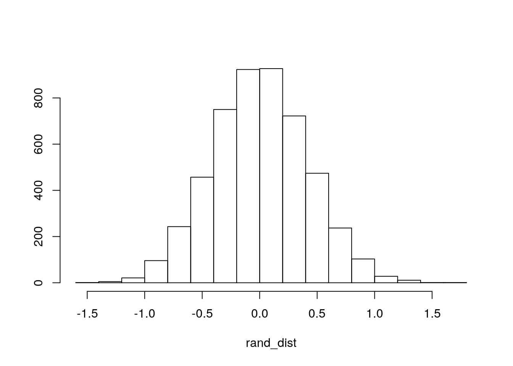
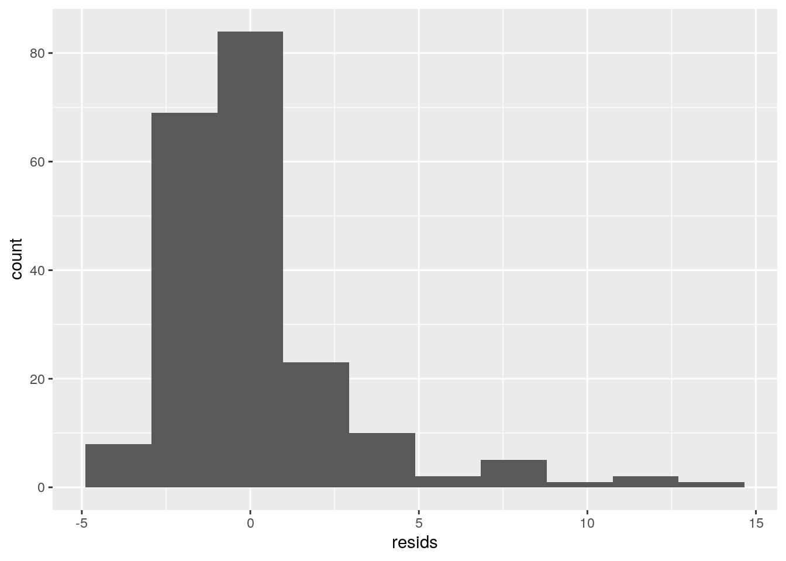
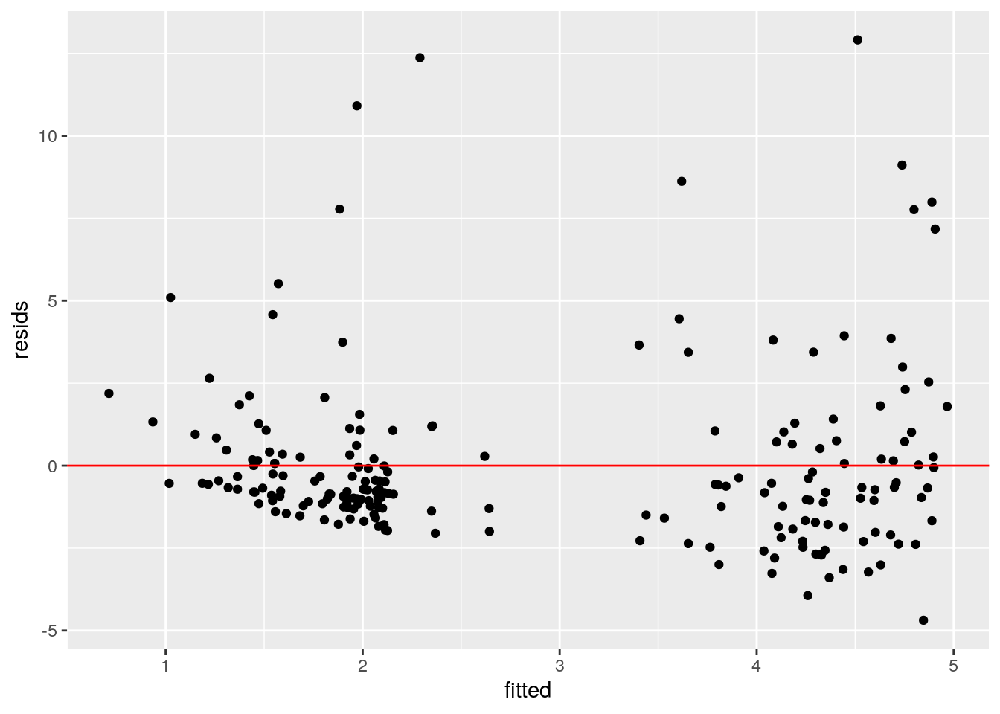
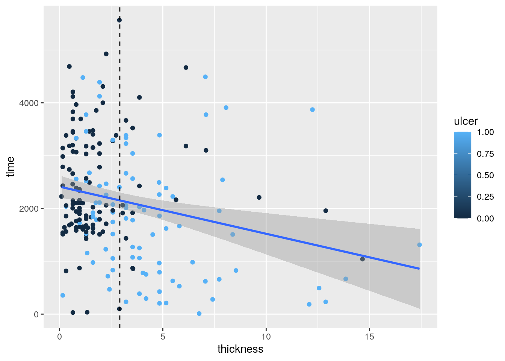
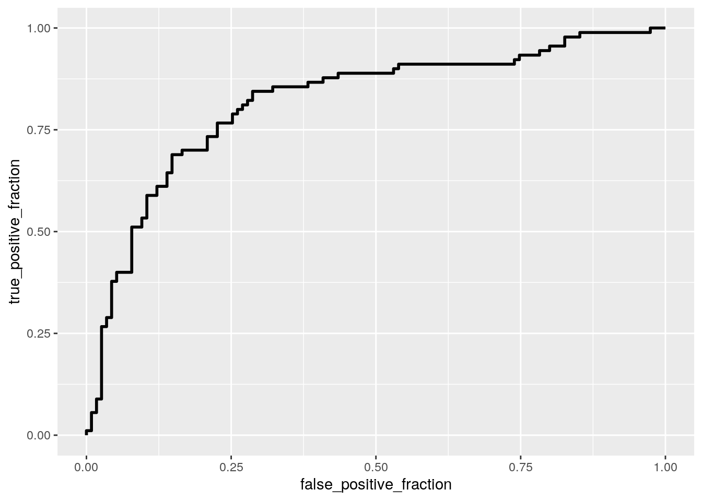
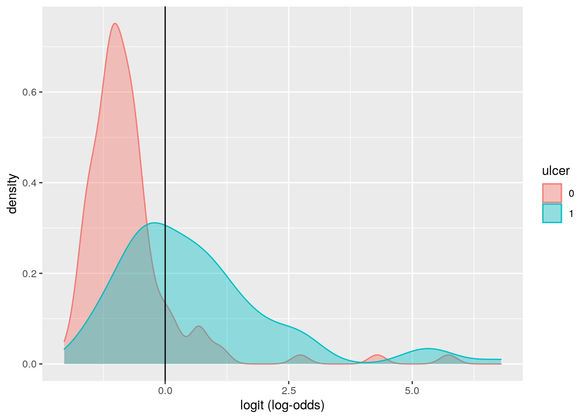

The data set that I’m going to use for this project is composed data collected from patients who had maglignant melanonma. Each patients got their tumor removed surgically at the Department of Plastic Surgery, University Hospital of Odense, Denmark during the period 1962 to 1977. This data contains: patients’ sex, age, year of operation, the tumor thickness, number of days they survived after the surgery, whether there was an indication of ulceration and the status of the patients after the surgery. Status 1 indicates that the patients had died from melanoma, 2 indicates they were still alive and 3 indicates they had dided from other causes that were unrelated.
library(tidyverse)
mela<- read_csv("melanoma.csv")
man1 <- manova(cbind(time, age, thickness, status ) ~ ulcer, data = mela)
summary(man1)## Df Pillai approx F num Df den Df Pr(>F)
## ulcer 1 0.23028 14.959 4 200 1.033e-10 ***
## Residuals 203
## ---
## Signif. codes: 0 '***' 0.001 '**' 0.01 '*' 0.05 '.' 0.1 ' ' 1summary.aov(man1)## Response time :
## Df Sum Sq Mean Sq F value Pr(>F)
## ulcer 1 18003599 18003599 15.302 0.0001249 ***
## Residuals 203 238836510 1176535
## ---
## Signif. codes: 0 '***' 0.001 '**' 0.01 '*' 0.05 '.' 0.1 ' ' 1
##
## Response age :
## Df Sum Sq Mean Sq F value Pr(>F)
## ulcer 1 901 901.08 3.2781 0.07169 .
## Residuals 203 55800 274.88
## ---
## Signif. codes: 0 '***' 0.001 '**' 0.01 '*' 0.05 '.' 0.1 ' ' 1
##
## Response thickness :
## Df Sum Sq Mean Sq F value Pr(>F)
## ulcer 1 321.9 321.90 44.611 2.259e-10 ***
## Residuals 203 1464.8 7.22
## ---
## Signif. codes: 0 '***' 0.001 '**' 0.01 '*' 0.05 '.' 0.1 ' ' 1
##
## Response status :
## Df Sum Sq Mean Sq F value Pr(>F)
## ulcer 1 4.529 4.5293 16.004 8.853e-05 ***
## Residuals 203 57.451 0.2830
## ---
## Signif. codes: 0 '***' 0.001 '**' 0.01 '*' 0.05 '.' 0.1 ' ' 1pairwise.t.test(mela$time, mela$ulcer, p.adj = "none")##
## Pairwise comparisons using t tests with pooled SD
##
## data: mela$time and mela$ulcer
##
## 0
## 1 0.00012
##
## P value adjustment method: nonepairwise.t.test(mela$thickness, mela$ulcer, p.adj = "none")##
## Pairwise comparisons using t tests with pooled SD
##
## data: mela$thickness and mela$ulcer
##
## 0
## 1 2.3e-10
##
## P value adjustment method: nonepairwise.t.test(mela$status, mela$ulcer, p.adj = "none")##
## Pairwise comparisons using t tests with pooled SD
##
## data: mela$status and mela$ulcer
##
## 0
## 1 8.9e-05
##
## P value adjustment method: none.05/8## [1] 0.006251 - 0.95^8## [1] 0.3365796After conducting the MANOVA which shows there’s a very small p-value of 1.033e-10, we can reject the null hypothesis and conclude there’s at least 1 of the categories (time, age, thickness of tumor, and status after surgery) differ for patients who had ulcerated tumor vs those who were not. After taking the ANOVAS, survival time after surgery, thickness of tumor and post surgery status are showing significant difference in people who had ulcerated tumor and those who were not. AFter taking the t-tests, all of the three variables shown significant in ANOVAS are shown to have significant differences between the ulcerated patients and those who were not. In total we have conducted 1 MANOVA, 4 ANOVAS and 3 t-tests thus 8 tests. Therefore, the overall type I error rate is 0.3365796. The adjusted significant number (bonferroni adjusted) is 0.00625.
library(dplyr)
mela %>% summarize(mean(thickness[ulcer == 1]) - mean(thickness[ulcer == 0]))## # A tibble: 1 x 1
## `mean(thickness[ulcer == 1]) - mean(thickness[ulcer == 0])`
## <dbl>
## 1 2.53rand_dist<-vector()
for(i in 1:5000){
new<-data.frame(thickness=sample(mela$thickness),ulcer=mela$ulcer)
rand_dist[i]<-mean(new[new$ulcer==1,]$thickness)-
mean(new[new$ulcer==0,]$thickness)}
{hist(rand_dist,main="",ylab=""); abline(v = c(2.525029, -2.525029),col="red")}
mean(rand_dist > 2.525029 | rand_dist < -2.525029)## [1] 0The randomization test show a very low p-value of 0 which mean we have enough evidence to reject the null hypothesis that stated there’s no difference in thickness between the patients who had ulcerated tumor vs patients who didn’t have ulcerated tumor. The alternative hypothesis is that there are a difference in thickness between the patients who had ulcerated tumor or not.These randomization tests concluded to reject the null hypothesis just like how we concluded with the MANOVA.
library(lmtest)
library(sandwich)
library(car)
#center the variables
mela$time_c <- mela$time - mean(mela$time)
#checking for assumptions
resids<-lm(thickness~mela$ulcer+ mela$time_c, data=mela)$residuals
fitted<-lm(thickness~mela$ulcer+ mela$time_c, data=mela)$fitted.values
ggplot()+geom_histogram(aes(resids),bins=10)
ggplot()+geom_point(aes(fitted,resids))+geom_hline(yintercept=0, color='red')
shapiro.test(resids)##
## Shapiro-Wilk normality test
##
## data: resids
## W = 0.77936, p-value = 2.778e-16ft<-lm(thickness~mela$ulcer+ mela$time_c, data=mela)
bptest(ft)##
## studentized Breusch-Pagan test
##
## data: ft
## BP = 4.4855, df = 2, p-value = 0.1062mela %>% ggplot(aes(thickness, time, color = ulcer)) +
geom_point() + geom_smooth(method = "lm") + geom_vline(xintercept = mean(mela$thickness, na.rm = T), lty = 2)
coeftest(ft, vcov = vcovHC(ft))##
## t test of coefficients:
##
## Estimate Std. Error t value Pr(>|t|)
## (Intercept) 1.90278725 0.22289120 8.5368 3.301e-15 ***
## mela$ulcer 2.31665127 0.40725014 5.6885 4.453e-08 ***
## mela$time_c -0.00034895 0.00019621 -1.7785 0.07683 .
## ---
## Signif. codes: 0 '***' 0.001 '**' 0.01 '*' 0.05 '.' 0.1 ' ' 1summary(ft)##
## Call:
## lm(formula = thickness ~ mela$ulcer + mela$time_c, data = mela)
##
## Residuals:
## Min 1Q Median 3Q Max
## -4.6868 -1.3018 -0.7138 0.5184 12.9072
##
## Coefficients:
## Estimate Std. Error t value Pr(>|t|)
## (Intercept) 1.9027872 0.2526837 7.530 1.65e-12 ***
## mela$ulcer 2.3166513 0.3890846 5.954 1.14e-08 ***
## mela$time_c -0.0003490 0.0001725 -2.023 0.0444 *
## ---
## Signif. codes: 0 '***' 0.001 '**' 0.01 '*' 0.05 '.' 0.1 ' ' 1
##
## Residual standard error: 2.666 on 202 degrees of freedom
## Multiple R-squared: 0.1964, Adjusted R-squared: 0.1885
## F-statistic: 24.69 on 2 and 202 DF, p-value: 2.551e-10After running the Breuch-Pagan test, with the p-value = 0.1062 we cannot reject the null hypothesis of homoskedascity which means we met the homoskedascity. I conducted Shapiro test for normality, the p-value came back to be 2.778e-16 which rejected the null hypothesis that stated the true distribution is not normal. Checking the scatterplot for linearity, the data shown no linearity between these variable therefore we fail of all the assumptions except for homoskedascity for a linear regression test. But after conducting the linear regression on the data, the intercept of 1.9027872 represent predicted thickness of patients who have no ulceration tumor and zero survival time since the operation. For patients who had ulceration tumor and zero days survival after operation, their tumor thickness is approximately 2.316 more than those who did not had ulceration and survived zero days after operation. The predicted tumor thickness of patients who had no ulcer decrease by 0.0003490 for every one day they survive post operation. The model explained about 0.1964 of the variation in the thickness of the tumor. After adjusted for extra explanatory variables, the model explained about 0.1885 of variation in thickness.Resulted p-values from the robust standard errors is smaller than the linear regression but its stand error is greater than those in the linear regression.
samp_distn <- replicate(5000, {
bootdat <- sample_frac(mela, replace = T)
fit1 <- lm(thickness ~ time_c*ulcer, data = bootdat)
coef(fit1)
})
samp_distn %>% t %>% as.data.frame %>% summarize_all(sd)## (Intercept) time_c ulcer time_c:ulcer
## 1 0.228061 0.0002026241 0.3992403 0.0003921327In comparison to the robust SE and the linear regression SE without interaction, these bootstrap SE with interaction is somewhat in the middle where the order would be the highest SE is the robust SE, second highest is bootstrap SE and the smallest is the linear regression. Though for all the variables this trend is not consistence across all the SEs, boostrap SEs are mostly in the middle. I would still reject the null hypothesis using these SE which means the p-value for the bootstrap SE should be somewhere in between those of robust SE and linear regression. The bigger the SEs of these tests, the smaller their p-values. All of the p-values except variable time in the robust SEs showed significance except for time but since the SEs for bootstrap are less that of robust SEs, the p-values should be small enough where we would still reject the null hypothesis using this bootstrap SEs.
class_diag<-function(probs,truth){
tab<-table(factor(probs>.5,levels=c("FALSE","TRUE")),truth)
acc=sum(diag(tab))/sum(tab)
sens=tab[2,2]/colSums(tab)[2]
spec=tab[1,1]/colSums(tab)[1]
ppv=tab[2,2]/rowSums(tab)[2]
if(is.numeric(truth)==FALSE & is.logical(truth)==FALSE) truth<-as.numeric(truth)-1
ord<-order(probs, decreasing=TRUE)
probs <- probs[ord]; truth <- truth[ord]
TPR=cumsum(truth)/max(1,sum(truth))
FPR=cumsum(!truth)/max(1,sum(!truth))
dup<-c(probs[-1]>=probs[-length(probs)], FALSE)
TPR<-c(0,TPR[!dup],1); FPR<-c(0,FPR[!dup],1)
n <- length(TPR)
auc<- sum( ((TPR[-1]+TPR[-n])/2) * (FPR[-1]-FPR[-n]) )
data.frame(acc,sens,spec,ppv,auc)
}library(tidyverse)
library(plotROC)
mela$thickness_c <- mela$thickness - mean(mela$thickness)
fit2 <- glm(ulcer ~ time_c*thickness_c, data = mela, family = "binomial")
summary(fit2)##
## Call:
## glm(formula = ulcer ~ time_c * thickness_c, family = "binomial",
## data = mela)
##
## Deviance Residuals:
## Min 1Q Median 3Q Max
## -3.3873 -0.8361 -0.6213 0.9490 1.9476
##
## Coefficients:
## Estimate Std. Error z value Pr(>|z|)
## (Intercept) -1.508e-01 1.666e-01 -0.906 0.36513
## time_c -3.973e-04 1.536e-04 -2.586 0.00971 **
## thickness_c 4.328e-01 8.814e-02 4.910 9.12e-07 ***
## time_c:thickness_c -2.775e-05 7.231e-05 -0.384 0.70113
## ---
## Signif. codes: 0 '***' 0.001 '**' 0.01 '*' 0.05 '.' 0.1 ' ' 1
##
## (Dispersion parameter for binomial family taken to be 1)
##
## Null deviance: 281.13 on 204 degrees of freedom
## Residual deviance: 228.53 on 201 degrees of freedom
## AIC: 236.53
##
## Number of Fisher Scoring iterations: 5exp(coef(fit2))%>%round(3)%>%t## (Intercept) time_c thickness_c time_c:thickness_c
## [1,] 0.86 1 1.542 1prob2 <- predict(fit2, type = "response")
pred2 <- ifelse(prob2 > 0.5, 1, 0)
table(prediction = pred2, truth = mela$ulcer) %>%
addmargins## truth
## prediction 0 1 Sum
## 0 101 37 138
## 1 14 53 67
## Sum 115 90 205class_diag(prob2, mela$ulcer)## acc sens spec ppv auc
## 1 0.7512195 0.5888889 0.8782609 0.7910448 0.8189372classify <- mela %>% transmute(prob2, pred2, truth = ulcer)
ROCplot <- ggplot(classify) + geom_roc(aes(d = truth,
m = prob2), n.cuts = 0)
ROCplot
calc_auc(ROCplot)## PANEL group AUC
## 1 1 -1 0.8189372mela$logit<-predict(fit2,type="link")
mela%>%mutate(ulcer=as.factor(ulcer)) %>% ggplot()+geom_density(aes(logit,color=ulcer,fill=ulcer), alpha=.4)+
geom_vline(xintercept=0)+xlab("logit (log-odds)")
There’s a significant correlation of days survived after surgery and the thickness of the tumor in predicting whether the tumor is ulcerated or not. But the interaction between time survival after and the thickness of the tumor doesn’t shown significant correlation in predicting ulceration in tumor. The odds of ulceration tumor for patients who had 0 time surviving after the surgery and zero thickness in tumor is 0.86. For every one increase in thickness, the odd of the the tumor being ulcerated increased by 1.542. The odd of the tumor being ulcerated stay the same and days of survival after the surgery doesn’t change the odd of the prediction of ulcer. The Accuracy of this model is 0.751, Sensitivity (TPR)= 0.588, Specificity (TNR)=0.878, Precision (PPV)= 0.791, and AUC=0.819. The AUC is pretty good therefore this model is pretty good at predicting the ulceration in tumor.
library(knitr)
fit3 <- glm(ulcer ~ time+sex+status+age+year+thickness, data = mela, family = "binomial")
prob3 <- predict(fit3, type = "response")
class_diag(prob3, mela$ulcer)## acc sens spec ppv auc
## 1 0.7560976 0.6222222 0.8608696 0.7777778 0.8110145#10 fold CV
k = 10
data <- mela[sample(nrow(mela)), ]
folds <- cut(seq(1:nrow(mela)), breaks = k, labels = F)
diags <- NULL
for (i in 1:k) {
train <- data[folds != i, ]
test <- data[folds == i, ]
truth <- test$ulcer
fit <- glm(ulcer ~ time+sex+status+age+year+thickness, data = mela, family = "binomial")
probs <- predict(fit, newdata = test, type = "response")
diags <- rbind(diags, class_diag(probs, truth))
}
summarize_all(diags, mean)## acc sens spec ppv auc
## 1 0.7559524 0.6284993 0.8603037 0.7793651 0.8002006#lasso and 10-fold CV based on lasso
library(glmnet)
library(dplyr)
x <- model.matrix(ulcer ~time+sex+status+age+year+thickness, data = mela)[, -1]
y <- as.matrix(mela$ulcer)
cv <- cv.glmnet(x, y, family = "binomial")
lasso <- glmnet(x, y, family = "binomial", lambda = cv$lambda.1se)
coef(lasso)## 7 x 1 sparse Matrix of class "dgCMatrix"
## s0
## (Intercept) -4.470006e-01
## time -2.865312e-05
## sex .
## status -1.344210e-01
## age .
## year .
## thickness 1.745097e-01k = 10
data1 <- mela[sample(nrow(mela)), ]
folds1 <- cut(seq(1:nrow(mela)), breaks = k, labels = F)
diags1 <- NULL
for (i in 1:k) {
train <- data1[folds1 != i, ]
test <- data1[folds1 == i, ]
truth <- test$ulcer
fit1 <- glm(ulcer ~ thickness, data = mela, family = "binomial")
probs1 <- predict(fit1, newdata = test, type = "response")
diags1 <- rbind(diags1, class_diag(probs1, truth))
}
summarize_all(diags1, mean)## acc sens spec ppv auc
## 1 0.727381 0.5492893 0.8848152 0.7865476 0.823217The in-sample classification diagnostics has Accuracy=0.756, Sensitivity=0.622, Specificity=0.861, Precision=0.778, AUC=0.811. There’s a very slight decrease of AUC when conducting linear regression with all the variables instead of just 2 but overall, the AUC for this model is still pretty good at predicting ulceration in tumor. After conducting the 10-fold cross over, the new test has a Accuracy=0.754, Sensitivity=0.612, Specificity=0.862, Precision=0.780, AUC=0.813 which are very similar to the stat from in-sample. Lasso determined that only the variable thickness that can be a good predictor of the tumor ulceration in patients in this sample. After conducting 10-fold CV for just the thickness variable, the result shown that Accuracy=0.726, Sensitivity=0.512, Specificity=0.887, Precision=0.773, AUC=0.829. The AUC after conducting LASSO is slightly better than the out of sample.
Note that the echo = FALSE parameter was added to the code chunk to prevent printing of the R code that generated the plot.